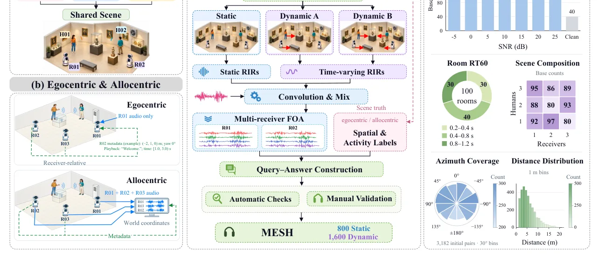
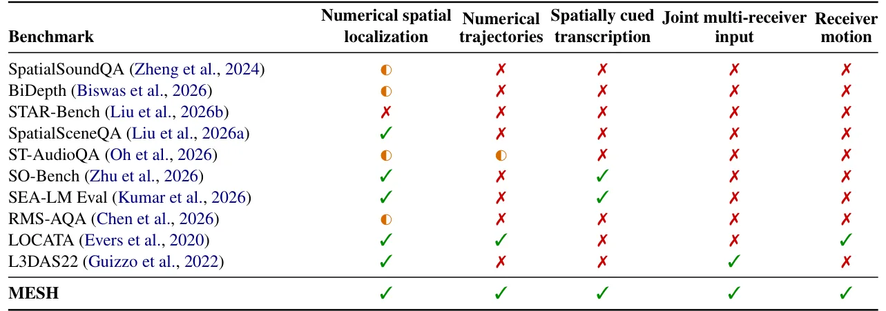
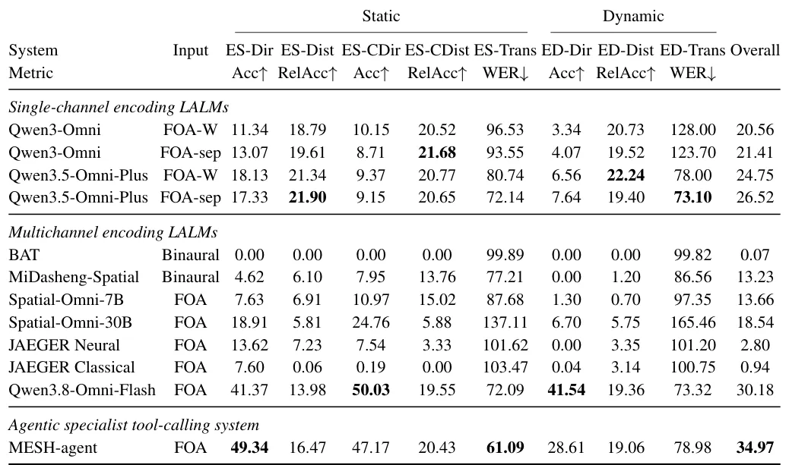
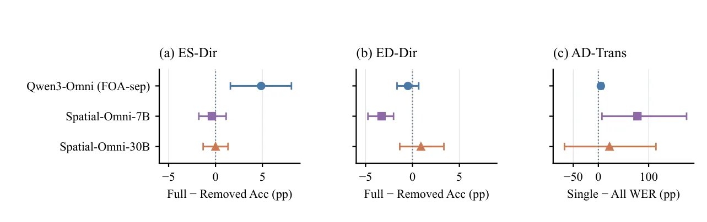

O problema da audição distribuída
Em ambientes acústicos reais, o som não vem de uma única fonte isolada. Múltiplas fontes, algumas estáticas e outras em movimento, criam uma cena acústica complexa sobreposta a ruídos ambientais e reverberação. Para sistemas de escuta distribuída, onde vários receptores com arrays de microfones observam essa cena de locais diferentes, o desafio vai além de transcrever o que foi dito. É preciso identificar quem fala, onde está a fonte e como ela se move no espaço 3D.
Os benchmarks existentes focam em componentes isolados: previsão espacial numérica, transcrição seletiva ou processamento de fala distribuído. No entanto, eles falham em avaliar se o sinal de fala permanece associado à fonte física correta ao longo do tempo e entre diferentes receptores. Uma estimativa de direção correta pode deixar a distância indefinida, e uma transcrição fluente pode pertencer ao orador errado. Essa desconexão entre a informação acústica disponível e sua interpretação correta é o gap que o MESH busca medir.
Introduzido por pesquisadores da Shanghai Jiao Tong University e Nanjing University, o MESH (Multi-receiver Evaluation of Spatial Hearing across Egocentric and Allocentric Views) propõe uma avaliação holística. O dataset contém aproximadamente 40.000 perguntas distribuídas em 13 tarefas estáticas e dinâmicas de localização e transcrição espacial. O objetivo é testar se os modelos podem integrar evidências de múltiplos receptores para construir uma compreensão espacial coerente da cena acústica.

Duas perspectivas, um único cenário
O cerne da proposta do MESH é a distinção entre duas perspectivas coordenadas: a visão egocêntrica e a visão allocêntrica. A visão egocêntrica representa a auto-percepção de um único receptor. As consultas espaciais e previsões usam o sistema de coordenadas local desse dispositivo. Nesse cenário, o modelo recebe apenas o registro local, mas pode colaborar com pares (peers) que fornecem metadados, como poses de robôs, transcrições de reproduções e intervalos de tempo. Isso simula um cenário onde um agente tem acesso limitado ao seu próprio sensor, mas pode consultar outros dispositivos.
A visão allocêntrica, por outro lado, utiliza um sistema de coordenadas de mundo 3D compartilhado. Aqui, o modelo tem acesso a todos os registros sincronizados dos receptores e aos metadados globais. O objetivo é avaliar se o sistema consegue entender a localização das fontes e o conteúdo da fala em um quadro de referência comum, integrando informações de todos os ouvintes. Essa distinção é crucial porque a resolução de ambiguidades espaciais muitas vezes depende da capacidade de cruzar dados de múltiplas perspectivas.
O dataset foi construído com 800 cenas base que abrangem 100 salas. Cada cena base gera uma realização estática e duas dinâmicas independentemente amostradas, compartilhando conteúdo de fala, ruído e layout inicial. As gravações são de primeira ordem (First-Order Ambisonics - FOA), capturando observações espaciais em cada receptor. O movimento prescrito das fontes e dos receptores altera a geometria ao longo do tempo, criando cenários dinâmicos que testam a robustez dos modelos a mudanças contínuas no ambiente acústico.
Metodologia de avaliação rigorosa
A avaliação do MESH é estruturada em 19.117 perguntas estáticas e 20.882 dinâmicas. As tarefas incluem localização estática e dinâmica (direção e distância) e transcrição espacial. Para localização, as previsões são consideradas corretas se estiverem dentro de 20 graus de erro de direção, 20% de erro relativo de distância ou 2 metros de erro na posição no mundo. Na localização dinâmica, o sistema deve prever valores espaciais absolutos em uma grade de 0,5 segundos, mantendo a atribuição consistente da fonte entre os rastros de direção.
A transcrição espacial é avaliada pela Taxa de Erro de Palavra (WER) do corpus, que reflete tanto a seleção correta do alvo quanto o reconhecimento de fala. Perguntas que consultam regiões vazias são avaliadas separadamente por precisão de resposta vazia. Para sintetizar o desempenho, os autores definem uma pontuação 'Overall' que pondera igualmente a localização e a transcrição, normalizando os erros para uma escala de 0 a 100. Isso permite comparar modelos que podem ter fortes pontos em uma métrica e fracos em outra.
Os autores avaliaram onze configurações de modelos de áudio e um agente de linguagem (MESH-agent). Os modelos incluem LALMs (Large Audio-Language Models) como Qwen3-Omni, Spatial-Omni, JAEGER, BAT e MiDasheng-Spatial, além do Qwen3.8-Omni-Flash. O MESH-agent usa um planejador Qwen3-14B congelado para coordenar modelos de áudio especialistas e ferramentas de processamento de sinal. Essa diversidade permite testar desde abordagens end-to-end até sistemas agênticos que chamam ferramentas especializadas.

Resultados: o abismo na localização dinâmica
Os resultados revelam um desempenho insatisfatório dos modelos atuais em tarefas de localização espacial, especialmente nas dinâmicas. A melhor precisão para estimativa estática de distância foi de apenas 21,90%, e para rastreamento dinâmico de direção, foi de 41,54%. Essas cifras são alarmantemente baixas, indicando que mesmo os modelos mais avançados falham em mapear corretamente a posição física das fontes em movimento. A transcrição espacial também mostrou WERs elevados, variando de 59,15% a 73,10% em quatro tarefas, sugerindo que a confusão entre oradores é um problema persistente.
Ao analisar os modelos individuais, o Qwen3.8-Omni-Flash destacou-se em algumas métricas de localização estática, alcançando 41,37% de precisão na direção e 50,03% na direção combinada. No entanto, seu desempenho em transcrição dinâmica caiu para 73,32% no score geral. O MESH-agent, que utiliza chamadas de ferramenta agêntica, obteve o melhor score geral na visão egocêntrica (34,97%), mas ainda assim ficou longe de uma resolução confiável. Isso sugere que a arquitetura do modelo importa, mas não é suficiente para superar as limitações fundamentais na associação fonte-fala.
A tabela de resultados egocêntricos mostra que modelos como BAT e MiDasheng-Spatial tiveram desempenhos próximos de zero em várias métricas de localização, enquanto modelos baseados em FOA (First-Order Ambisonics) tiveram melhorias marginais. O JAEGER Neural e Classical também mostraram dificuldades significativas. Esses números não são apenas ruído estatístico; eles indicam uma falha sistêmica na capacidade dos modelos de extrair geometria espacial precisa a partir de sinais de áudio complexos e sobrepostos.

Por que os modelos falham?
Os estudos de ablação e experimentos adicionais revelam que os modelos existentes não conseguem aproveitar efetivamente as informações de pares. Em cenários com múltiplos oradores e dinâmicos, a associação entre a fala e a fonte física correta se torna extremamente difícil. O gráfico de ablação mostra que a remoção de metadados ou o acesso limitado a gravações de outros receptores impacta o desempenho, mas a presença desses dados não resolve o problema central de ambiguidade.
A dificuldade parece residir na incapacidade dos modelos de manter a identidade da fonte ao longo do tempo e do espaço. Em cenas lotadas, onde as vozes se sobrepõem e os movimentos alteram a geometria acústica rapidamente, os modelos tendem a falhar na rastreamento consistente. Eles podem transcrever corretamente o que foi dito, mas atribuem a fala à pessoa errada ou na posição errada. Essa falha na associação é o gargalo principal que o MESH expõe.
Além disso, a análise por condições mostra que o desempenho varia com a contagem de humanos, a relação sinal-ruído (SNR) e a distância da fonte. Modelos que recebem entradas FOA separadas (WXYZ como clipes de áudio distintos) podem ter comportamentos diferentes daqueles que recebem o canal omnidirecional ou entradas nativas de quatro canais. No entanto, nenhuma configuração conseguiu superar a barreira fundamental de precisão espacial necessária para aplicações robustas.

Limitações do benchmark e do dataset
É crucial entender o escopo do MESH. O dataset usa misturas simuladas de salas de exposição e fala lida em inglês. A generalização para conversas espontâneas, outros idiomas e ambientes de gravação física ainda não foi testada. O movimento é restrito a caminhos horizontais com altura fixa e yaw do robô, e longos intervalos de silêncio estão sub-representados. A interpolação de IRs (Funções de Resposta ao Impulso) aproxima a propagação variável no tempo sem modelagem exata do efeito Doppler.
As suposições de observação também são restritivas. As gravações são sincronizadas, as poses dos receptores e os logs de reprodução são conhecidos, e a própria reprodução de cada receptor é idealmente removida. A contagem de fontes e as pistas de seleção de alvo são fornecidas quando necessário. O benchmark não avalia deriva de relógio, calibração incerta, gravações perdidas ou controle ativo do receptor. A avaliação offline não estabelece desempenho em tempo real ou viabilidade de implantação embarcada.
Os autores também destacam que a sobreposição com os dados de pré-treinamento dos modelos não pode ser descartada. Além disso, a auditoria de escuta humana preliminar envolveu apenas um subconjunto pequeno de cenas e não estabelece consistência cruzada entre receptores. Os intervalos de confiança relatados não levam em conta comparações múltiplas. Esses limites são importantes para contextualizar os resultados: o MESH é um teste rigoroso em um domínio controlado, mas não uma prova definitiva de desempenho em todos os cenários do mundo real.
Conclusão: o gap entre informação e compreensão
O MESH introduz uma avaliação necessária para o campo de audição espacial. Ao cobrir 13 tarefas de localização e transcrição sob condições estáticas e dinâmicas, ele revela dificuldades persistentes em associar fala à fonte física correta. O fato de que a informação espacial distribuída não está sendo usada efetivamente pelos modelos atuais é um achado significativo. Há um gap claro entre o acesso à informação acústica distribuída e a capacidade de usá-la para compreensão espacial da fala.
Para o futuro, os modelos precisam integrar melhor os metadados dos pares, a geometria dos receptores e as observações acústicas através de diferentes locais, mantendo a identidade da fonte ao longo do tempo. A disponibilidade do dataset, do pipeline de construção e do código de avaliação pelo Shanghai Jiao Tong University e Nanjing University oferece uma base sólida para pesquisas futuras. O MESH serve como um espelho crítico, mostrando que, apesar dos avanços em LALMs, a audição espacial colaborativa ainda está em seus estágios iniciais.
O que levar para casa
O MESH não é apenas mais um benchmark de transcrição. Ele desafia a suposição de que modelos de áudio grandes podem resolver problemas espaciais complexos apenas com mais dados. A precisão de localização dinâmica abaixo de 50% é um lembrete duro de que a geometria acústica é difícil de inferir. Para desenvolvedores de sistemas de escuta distribuída, o papel destaca a necessidade de novas abordagens que vão além da transcrição pura, focando na associação robusta de fontes e rastreamento espacial consistente.
O que fica
- O MESH expõe que a precisão de localização dinâmica em modelos atuais é baixa (41,54%), indicando falha em rastrear fontes em movimento.
- Ter acesso a múltiplos receptores e metadados não resolve automaticamente a ambiguidade espacial; os modelos não integram bem essas informações.
- A transcrição espacial tem WERs altos (59-73%), mostrando que confundir oradores é um problema persistente em cenas complexas.
- O benchmark revela um gap entre a disponibilidade de informação acústica distribuída e a capacidade atual dos sistemas de usá-la para compreensão espacial.
Paper original: MESH: Multi-receiver Evaluation of Spatial Hearing across Egocentric and Allocentric Views
Comentários
Nenhum comentário ainda. Seja o primeiro.